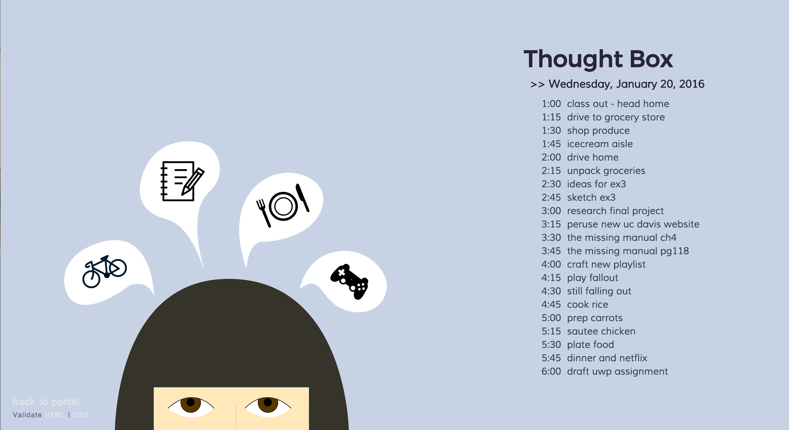
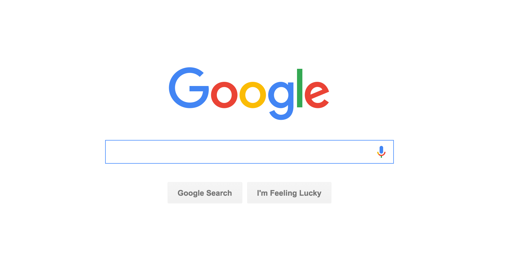
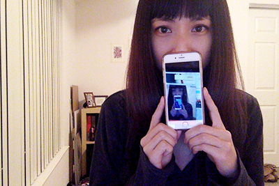

28 January 2016
Time is on my Side

I attempted to make my site engaging by using illustrative icons instead of text. Interactivity suffered because I couldn't get jQuery to work the way I wanted to but, I think it's still interactive because of the color changes and bubble appearance of hovers
---
More to learn!
23 January 2016
Forms!

I would say that Google Search is my most used web-based form. I Google anything I question or want to learn. It's funny, I never thought of the index page of Google.com as a form before but, now that we've studied it and learned how to code it it's obvious. The design is simple and clear: plenty of white space with the main form input centered on the page. The page is also everchanging so that you never get bored of it. On holidays or on other particularly special days, Google will have special banners done by various artists that are usually interactive.
link to og slideshow
---
You're great Google!
14 January 2016
My Favorite Interface

Of course, my favorite interface is my iPhone. My entire life depends and is possible because of this interface. It's how I keep track of my life, where I am in my life, and the people in my life. iPhones keep everyone constantly connected to the world through various connections to outside networks, and in that way iPhones become everyones television, newspaper, weather report, source of entertainment, and so much more.
In terms of design, it is a simple and easy to use interface on a sleek and minimally designed hardware. Apple started the craze for touch screen phones and the emergence of a visual language of icons. Apple took the mundane, numbers-and-words-only type of interface, and started a new standard of aesthetically pleasing and fun interface that stole the hearts of the world. Today, you could really say that most people (in “developed” societies, of course) own an iPhone or some kind of Apple product, if not, own almost all the products in their line of personal computers/interfaces. Apple’s interface design changed the face of technology and they continue to create new standards for the rest of the technological world. As they will continue to be innovators, I will continue to use/buy their interfaces.
---
Thanks Steve Jobs!